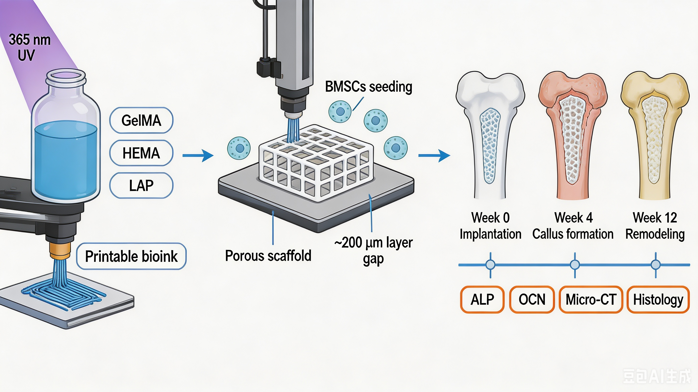
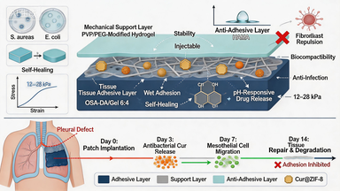

生物医学工程
西南交通大学 医学院
专注生物材料与组织工程研究，致力于骨修复支架及水凝胶敷料方向的技术探索与转化。
02 经历 EXPERIENCE
03 荣誉 HONORS
04 科研 RESEARCH


05 能力 STRENGTHS
学习方法成熟、治学严谨，专业排名第 2，获评国家奖学金
拥有班级、多学生组织管理经验，担任三下乡实践负责人，擅长统筹规划与分工协作
兼顾繁重专业课、多项部长职务与科研项目，具备优秀的时间管理与情绪调节能力